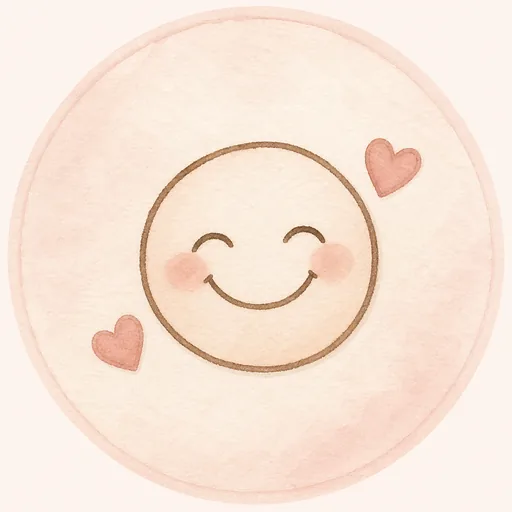
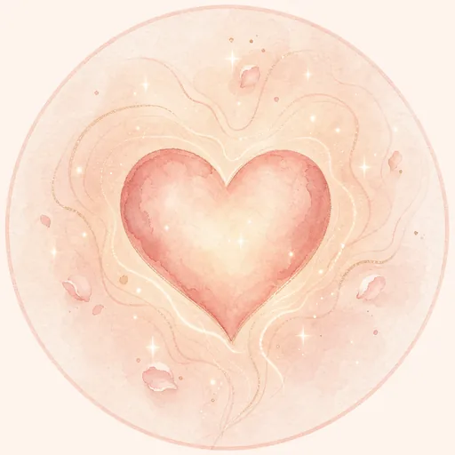
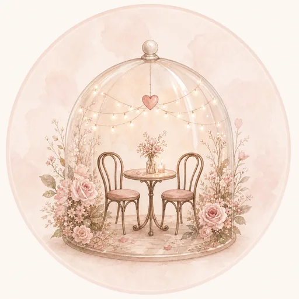

I know this is a bit extra, but I wanted to say thank you in a way that feels like me.
So before the night fully ends, open this properly 😌
Play something soft
A little something for when you get home
I know this is a bit extra, but I wanted to say thank you in a way that feels like me.
So before the night fully ends, open this properly 😌
I really enjoyed spending time with you tonight.
The whole date felt easy, warm, and genuinely nice to be in.
You looked beautiful, your energy felt good, and I left with that quiet kind of happiness that stays with you after a good night.
It wasn’t just the date itself — it was you.

Yeah… that one deserves its own mention 😌

Soft, calm, and easy to be around.

You made simple moments feel better.
I see someone soft, beautiful, and genuine.
Someone who has a calm kind of presence, but still leaves a strong impression.
You’re the kind of person who feels easy to admire, not just because of how you look, but because of how you come across.
And honestly… that’s rare.
worth appreciating properly
Tonight felt like more than just going out.
It felt like one of those moments you actually remember.
The kind that makes you pause later and smile about it.
The kind that reminds you that good company really does make a difference.
And for me, tonight was that.
I’m really glad I got to share it with you.
No pressure, no big speech 😅
I just know I enjoyed tonight, I enjoyed you, and I’d really like to make more memories with you.
If you’d be open to that, I’d love to take you out again.
Okay, noted 😌
Then I guess this means I’m not done making you smile yet.
I’ll plan the next one properly.
More memories pending… ✨
A smile is a good start.
No pressure at all — I just wanted you to know that tonight meant something to me.